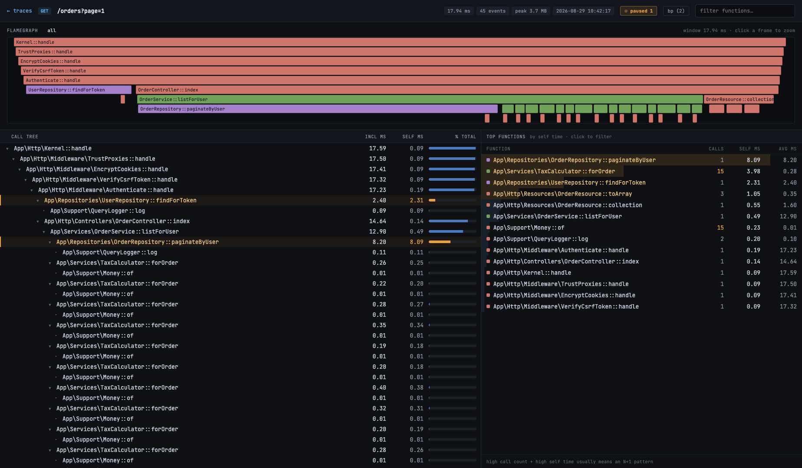
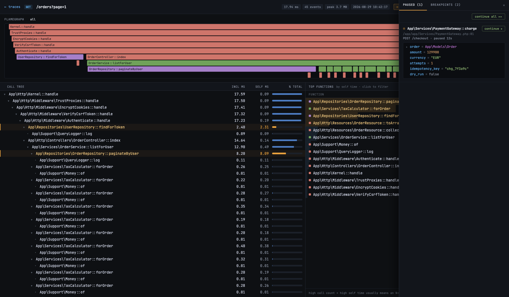

filo is a zero-extension call tracer for PHP. Record any request, then explore it as a flamegraph, a call tree with self-time hotspots - or pause it live and inspect variables at a breakpoint.

Set breakpoints on a function, method or closure. When a request hits one, it shows up in the paused panel - local variables laid out, arguments expanded - and continues on your command. No IDE, no Xdebug session dance.

filo is MIT-licensed and built in the open. Star the repo, file issues, send pull requests - it all helps.
★Star on GitHub